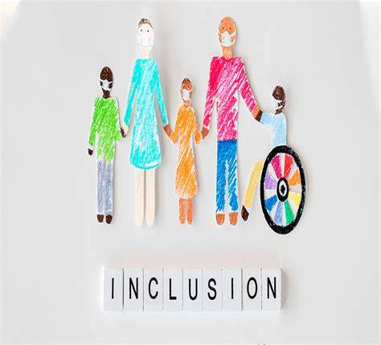
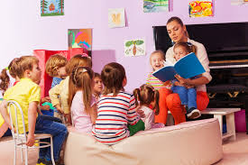

INCLUSIÓN EDUCATIVA
Es un proceso permanente que reconoce, valora y responde de manera pertinente a la diversidad de caracteristicas, intereses, posibilidades y expectativas de las niñas y los niños, adolecentes, jovenes y adultos, cuyo
objetivo es promover su desarrollo, aprendizaje y participación, con pares de su misma edad, en un ambiente de aprendizaje común, sin discriminación o exclusión alguna y garantiza en el marco de los derechos humanos, los apoyos y los ajustes razonables
requeridos en su proceso educativo, a través de prácticas, politicas y culturas que eliminan las barreras esistentes en el entorno educativo.
El camino hacia la inclusión ha sido largo, sin embargo no ha pasado tanto tiempo desde que en 1975 en Estados Unidos se toma en cuenta que los alumnos con alguna discapacidad deberían recibir una educación adecuada y de calidad.
Al ir reconociendo este derecho a la educación que tenemos todos, surgen las escuelas inclusivas. Dentro de estas escuelas se busca reconocer la diferencias de todos sus alumnos y brindarles una educación de calidad. No obstante, se empiezan a generar dos vertientes: la escuela integradora y la escuela inclusiva.
Como consecuencia de lo que hemos visto en el apartado anterior, la educación inclusiva tiene unos objetivos claros como son la inclusión social y académica del alumnado puesto que se trata de incluir a los alumnos no de marginarlos de la educación.
El sistema educativo único, es decir, no deben existir programas especiales para los alumnos o alumnas que tienen determinadas necesidades. Se dene atender a todos los alumnos y alumnas en función de sus características, solo así conseguiremos la igualdad de oportunidades en base a la solidaridad y al fomento de la participación.
También es importante que todas las personas que participan en la educación se coordinen: padres, profesores, medios de comunicación etc, así como la promoción de la inclusión en todos los ámbitos sociales y laborales.

OBSTÁCULOS A SUPERAR DE LA EDUCACIÓN INCLUSIVA
Existen varias barreras, como creencias erróneas sobre la discapacidad o la diversidad cultural, la falta de accesibilidad en los centros escolares, currículos poco flexibles y profesorado sin formación específica. Además, la falta de recursos económicos y de voluntad política en algunas regiones limita la capacidad de adaptar el entorno educativo a las necesidades de todo el alumnado. Superar estos obstáculos requiere compromiso, formación y cooperación entre todos los actores educativos.
OBJETIVOS DE LA INCLUSIÓN EDUCATIVA
Si bien la educación inclusiva busca integrar y asegurar una formación integral e igualitaria, cuenta con otros objetivos que permiten comprender cuáles son sus principales metas con respecto al ofrecimiento de servicios y recursos para el desarrollo integral de todos los estudiantes. Estos objetivos son:
.- Garantizar el acceso a la educación para todos los estudiantes sin importar sus condiciones particulares.
.- Asegurar la igualdad de oportunidades para que los estudiantes pueden aprender y adquirir habilidades.
.- Fomentar un ambiente de aceptación y respeto por la diversidad en los centros educativos.
.- Mejorar la calidad de la enseñanza y el aprendizaje a través de estrategias inclusivas y adaptadas.
.- Brindar herramientas, recursos y apoyo a los estudiantes que cuentan con necesidades educativas especiales.

CARACTERÍSTICAS DE LA INCLUSIÓN EDUCATIVA
La educación inclusiva se basa en varios principios fundamentales que la caracterizan. Primero, se debe garantizar que todos los estudiantes puedan acceder a una educación en un entorno positivo, seguro y propicio para el aprendizaje significativo. Además, es crucial que los estudiantes con discapacidades estén activamente involucrados en su aprendizaje y en las actividades escolares. Para lograr esto, se deben proporcionar las adaptaciones y apoyos cuando estos sean necesarios, esto con el objetivo de fomentar el éxito académico.
Ahora bien, en todas las interacciones, los estudiantes con discapacidades deben percibir el respeto de todos los miembros de la comunidad educativa, sobre todo de los docentes, compañeros y demás personal. La inclusión educativa también implica reconocer la diversidad y las diferencias individuales como una fuente riqueza, ya que es la demostración de que todos y todas cuentan con capacidades, habilidades, gustos y expectativas diferentes, y no por ello de menor importancia.
Para alcanzar el éxito académico de todos los estudiantes, se debe fomentar el trabajo colaborativo, más aún cuando se recurre a metodologías como el aprendizaje basado en proyectos. Por último, la evaluación de los estudiantes con discapacidades debe ser adaptada y ajustada para lograr una medición de los resultados justa, equitativa y centrada en sus habilidades.